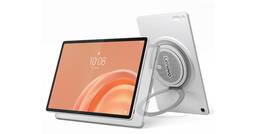
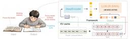
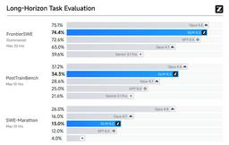
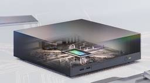
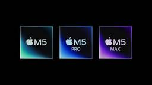
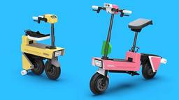

テクノエッジ TechnoEdge
https://www.techno-edge.net/
テックメディア TechnoEdge (テクノエッジ)公式サイトです。サイエンスから最新ガジェット、サービスやコンテンツまで、最前線のニュースとレビュー、コラムをお届けします。
フィード
PS3・PS Vitaのストア今度こそ閉鎖、2027年7月に全世界でサービス終了へ 延命から5年 21
21
テクノエッジ TechnoEdge
ソニー・インタラクティブエンタテインメント(SIE)が、PlayStation 3と PlayStation Vita本体からアクセスできるPS Storeサービスの終了計画を発表しました。
7時間前
マイクロソフト、ディスク版Xbox用ゲームのデジタルコピー化機能をテスト中とのうわさ 1
テクノエッジ TechnoEdge
ソニーが2028年1月以降にPS向け新作ゲームの物理ディスク販売を終了する方針を発表した直後、ライバル機のXboxを展開するマイクロソフトは、ユーザーがディスク版ゲームをデジタル版として扱えるようにする新機能のテストを開始したことが報じられています。
7時間前
QWERTYキーボードスマホ「Clicks Communicator」実機動画がついに公開 物理キー活用機能が多数(山根康宏) 1
テクノエッジ TechnoEdge
QWERTYスマホ「Clicks Communicator」は動作例公開され、ショートカットやメッセ通知UIなど使いやすさに重点。
8時間前
Claude Mythos／Fableで学習したとする無検閲AI「Qwythos-9B」GGUF版が登場、商用利用可能な120億パラメータの画像生成AI「Krea 2」など生成AI技術5つを解説（生成AIウィークリー） 36
テクノエッジ TechnoEdge
この1週間の気になる生成AI技術・研究をいくつかピックアップして解説する今回の「生成AIウィークリー」（第150回）は、AIエージェントが動作する環境をシミュレートする言語モデル「Qwen-AgentWorld」、Claude Mythos／Fableで学習したと謳うローカル無検閲AI「Qwythos-9B」GGUF版を取り上げます。
8時間前
AIエージェントに信頼できる名前を与える「Agent Name Service（ANS）」、Linux Foundationが発表。DNS基盤を拡張
テクノエッジ TechnoEdge
Linux Foundationは、既存のドメインネームシステム（DNS）基盤を拡張してインターネット上で稼働するAIエージェントに信頼できる識別子としての名前などを提供する新しいオープンソース標準「Agent Name Service（ANS）」の立ち上げ意向を発表しました。
8時間前
Apple Watchバンドは純正だけじゃない。素材で選ぶCampagne Sélection「I'm a band.」シリーズ（テクノエッジ購買部）
テクノエッジ TechnoEdge
Campagne Sélectionの「I’m a band.」シリーズは素材別にデザインと耐久性を重視し、価格も手頃で次のApple Watchバンド候補となる。
8時間前
アップル、iPhone 17の生産を15％減速するとのうわさ。中国のスマホ他社も軒並み出荷目標を削減
1
テクノエッジ TechnoEdge
・中国のリーカーがサプライチェーン情報筋の話として、AppleがiPhone 17の生産計画を約15%削減したと報告・iPhone 17は2025年9月の発売以来、過去最高水準の販売を記録してきたが、iPhone 18シリーズの登場を前に需要が落ち着きつつある・Xiaomiが20～30%、OPPO・vivo・Honorも15～30%の出荷目標引き下げを行っており、スマートフォン業界全体で調整局面に入っている
13時間前
ついにClaude Fable 5が復帰。復活祭は7月7日までで、以降はサブスク勢も追加課金が必要に（CloseBox） 2
テクノエッジ TechnoEdge
一般ユーザーが使える、現時点で最高峰のフロンティアAIであるClaude Fable 5が帰ってきました。
13時間前
ソニー、PS5 / PS4のディスク版ゲーム発売は2027年で終了 以降はダウンロード版のみ用意 「購買トレンドの変化を踏まえ」 25
テクノエッジ TechnoEdge
・2028年1月以降に発売されるPlayStation向け新作ゲームは、ディスク版の生産を終了しデジタル配信のみとなる・すでに発売済みのタイトルや2028年1月より前に発売されるディスク版タイトルへの影響はない・デジタルメディアへの需要が物理ディスクを大きく上回る市場環境の変化が決定の背景にある
19時間前
Anthropic、Claude Fable 5の明日復帰を予告。Opus 4.8よりちょい下のSonnet 5はすぐに使える（CloseBox） 2
テクノエッジ TechnoEdge
米商務省の許諾が得られたということで、AnthropicはFable 5およびMythos 5の米国以外への提供を明日開始すると発表しました。
1日前
電子ペーパー開発キットでゲームボーイを60Hz表示するエミュレーター『Paper Boy S3』 4
テクノエッジ TechnoEdge
中国のハードウェア技術者Wenting Zhang氏が、M5Stack社のE-inkディスプレイ搭載マイコン開発キット「PaperS3」上で、動作するゲームボーイエミュレーター『Paper Boy S3』を動かす様子をYouTubeに公開しました。
1日前
なぜ今？初音ミクさんの着信ボイス日英30種、iPhoneで初発売 クリプトン『プライベートで好きな音を楽しむ環境が整ってきた』 11
テクノエッジ TechnoEdge
クリプトン・フューチャー・メティアが、電子の歌姫『初音ミク』の公式通知ボイスを発売しました。
2日前

レノボ、9ユニット構成のJBLスピーカー内蔵タブレットLenovo Tab Plus Gen 2発売 据置きBTスピーカー兼用の独自発想、エンタメ向け12インチ2.5K 2
テクノエッジ TechnoEdge
レノボ・ジャパンが、JBL製の9ユニットスピーカーシステムと12.1型2.5Kディスプレイを搭載したエンタメ向けAndroidタブレット「Lenovo Tab Plus Gen 2」を発表しました。
2日前
『攻殻機動隊』『二十世紀電氣目録』『天幕のジャードゥーガル』ほか注目作多数 REGZAのアニメ伝道師に訊く今期おすすめ作品 2026年夏(片岡秀夫) 2
テクノエッジ TechnoEdge
レグザのアニメ伝道師、片岡秀夫氏による「今期おすすめアニメ」ガイドをお届けします。
2日前
音楽ストリーミングのTidal、AI生成音楽関する新しいポリシーの導入を発表、収益化禁止・識別タグ表示へ 2
テクノエッジ TechnoEdge
音楽ストリーミングサービスのTidalが、完全にAIで生成された音楽を用いて収益を得ることを阻止する新しいポリシーの導入を発表しました。さらに、アーティストやバンド、グループになりすまそうとするAI生成音楽を自動的に検出するツールも同時期の導入を予定しているとのことです。
3日前
AI時代でスマホ離れ？ASUSがPCに注力したCOMPUTEX 2026ブース (山根康宏) 1
テクノエッジ TechnoEdge
ASUSはCOMPUTEXでスマホ展示を撤退し、AIやゲーミングPCに注力。スマホ事業は事実上終了し、将来的な再展開も難しいと見られる。
3日前

数十ページのPDFを1回で処理、ローカルOCRモデル「Unlimited OCR」をバイドゥが無料公開。商用利用もできる（生成AIクローズアップ） 300
テクノエッジ TechnoEdge
今回の生成AIクローズアップは、Baiduの研究チームが開発した、数十ページのPDFなど長文を一括処理できるエンドツーエンドのOCRモデル「Unlimited OCR」を取り上げます。
3日前
Logi G316 X 98ゲーミングキーボード発売 8Kレートとホットスワップ対応制振ガスケットマウント採用のミッドレンジ 1
テクノエッジ TechnoEdge
Logitechの日本法人ロジクールが、ゲーミングブランド「ロジクールG」の新製品「G316 X 98 有線ゲーミングキーボード」を2026年7月16日（木）に発売します。
4日前

Opus 4.8に肉薄するオープンソースモデル「GLM-5.2」、VRAM4.5GBで動くコーディング特化AI「Gemma4-12B-Coder」など生成AI技術5つを解説（生成AIウィークリー） 97
テクノエッジ TechnoEdge
この1週間の気になる生成AI技術・研究をいくつかピックアップして解説する今回の「生成AIウィークリー」（第149回）は、Opus 4.8に肉薄するオープンソースモデル「GLM-5.2」や、テキストや画像から動き回れるゲーム世界を創るAI「DreamX-World 1.0」を取り上げます。
4日前

米政府、Anthropic「Mythos 5」を一部パートナー企業・組織に公開許可 2
テクノエッジ TechnoEdge
AIスタートアップのAnthropicは、米政府から同社のAIモデル「Claude Mythos 5」を一部の信頼できるパートナー企業・組織に対して提供再開する許可を受けました。
5日前

6月30日19時開催。NVIDIAが参入し異変づくしのWindows用プロセッサ最新動向。西川善司のテクノエッジワークショップ
テクノエッジ TechnoEdge
今回は、Intel、AMD、QualcommというWindowsプロセッサベンダーにNVIDIAが加わり様変わりしたPC市場がテーマ。NVIDIAの担当者に直接取材をした西川善司さんが事情を解説していきます。
5日前
OpenAI、次世代AIモデル「GPT-5.6」発表、まず米国政府承認ユーザーに限定プレビュー開始 2
テクノエッジ TechnoEdge
OpenAIは、次世代AIモデル「GPT-5.6」シリーズとして、フラッグシップとなる「Sol」、バランスのとれた中級モデル「Terra」、低コストかつ高速な「Luna」の3種類を発表しました。
6日前
Xbox Series X|S、2026年8月1日から100～150ドル値上げ。Series X 2TBモデルは販売終了へ 1
テクノエッジ TechnoEdge
マイクロソフトは、Xbox Serieis X|S本体の価格を2026年8月1日より改定すると発表しました。512GBモデルは100ドル、1TBモデルは150ドルの値上げになるとのことです。また、日本未発売の2TBモデルは販売終了（時期未定）するとのことです。
7日前

AppleがM6 Pro/Maxをスキップ、AI特化のM7チップを2027年前半に前倒し投入するとのうわさ 1
テクノエッジ TechnoEdge
■ AppleがMチップのリリース戦略を大幅転換、M7を前倒しへ
7日前
Apple製品が一斉値上げ、iPadやMacほか20～75%上昇 iPhoneやWatchは含まず 12
テクノエッジ TechnoEdge
・AppleはMac・iPad・HomePod・Apple TV・Vision Proを対象に一斉値上げ。iPhoneは今回対象外。・値上げの背景はAI需要急増によるDRAM・ストレージチップの供給不足と円安の進行。・Mac Studioは最大9万1000円増と最大の値上げ幅。Appleは今後も追加改定を示唆。
7日前
Logi G、約59gの軽量ゲーミングマウス G304 X SUPERLIGHT LIGHTSPEED発売 約4割減量で130時間駆動、44k高精度センサ採用 1
テクノエッジ TechnoEdge
Logitechの日本法人ロジクールが、ゲーミングブランド「ロジクールG」の新製品「G304 X SUPERLIGHT LIGHTSPEED ワイヤレス ゲーミング マウス」を発表しました。
7日前
任天堂、高精細になった新社屋「技術開発棟」29年竣工へ 延べ4万9000平方mに拡大、開発拠点としてサーバ設置など継続投資 5
テクノエッジ TechnoEdge
任天堂が京都の本社隣接地に建設中の新社屋「技術開発棟」について概要を公表しました。
7日前
生成AIグラビアをグラビアカメラマンが作るとどうなる？第69回：Boogu-Image-0.1とKrea 2が登場。Z-Imageの牙城を崩せるか？（西川和久） 153
テクノエッジ TechnoEdge
Boogu-Image-0.1
7日前
5分の動画素材を25分で生成。話題のワールドモデル「HappyOyster」を軸にしたMV制作の新潮流（CloseBox） 2
テクノエッジ TechnoEdge
Claude作家の黒戸寓吾が創作したSFショートショート「至高の歌」をテーマにした楽曲のAIミュージックビデオを作りました。作詞：黒戸寓吾、補作詞：松尾公也、作曲：Suno、歌唱：妻音源とりちゃん。映像素材はHappy Oysterです。
7日前
Google、Gemini 3.5 FlashにPC・スマホ操作を自動実行する「コンピューター使用」機能を追加 14
テクノエッジ TechnoEdge
Googleは、同社のAIモデル「Gemini 3.5 Flash」に、コンピューターの画面を認識して操作を実行する「コンピューター使用（computer use）」機能を組み込みツールとして統合したと発表しました。
8日前
『GTA 6』予約受付開始。アルティメット版はアイテムやショップなど特典モリモリ
テクノエッジ TechnoEdge
Rockstar Gamesは、6月25日より『Grand Theft Auto VI（GTA 6）』PlaySation版およびXbox series X|S版の予約受付を開始しました。
8日前

ロボティクスモビリティ「tatamo!」が秋葉原で試乗イベント開催 水冷ウェアChillerX Proとの同時体験も
テクノエッジ TechnoEdge
・ICOMAが開発中のロボティクスモビリティ「tatamo!」の試乗イベントを2026年7月11日に秋葉原で無料開催・tatamo!は特定小型原付区分で16歳以上免許不要、最高時速20km・1充電約30km走行可能・Shiftallの水冷ウェア「ChillerX Pro」との同時体験も可能
8日前
Anthropic、日本でClaudeコミュニティアンバサダー募集開始 イベント資金やAPIクレジット提供、開発者以外もOK 1
テクノエッジ TechnoEdge
・AnthropicがClaudeの地域コミュニティ構築を担う「Claude Community Ambassadors」プログラムを開始し、世界各地から参加者を募集している・アンバサダーにはイベント資金・月次APIクレジット・限定グッズなどが無償提供され、プレリリース機能へのアクセスやプロダクトチームへのフィードバック機会も得られる・開発者の肩書きは不要で、コミュニティビルダー・技術系ユーザー・Claudeアドボケイトの3タイプを対象に、同一都市からの複数名参加も歓迎している
8日前

INFOBARデザインのスマートリングがauで販売『NISHIKIGOI』『ICHIMATSU』柄 心拍・睡眠やストレスを24時間7日間計測
テクノエッジ TechnoEdge
auのデザインケータイ「INFOBAR」を指輪にしたようなヘルスケアデバイス「スマートリカバリーリング INFOBARコラボモデル」が、全国のKDDI直営店・au Style・auショップ・UQスポットで販売を開始しました。
8日前
Claude Codeが進化、Slackで動くClaude Tag発表 Anthropic製品のコード65%を書く実績、新たな権限モデル採用
テクノエッジ TechnoEdge
AI企業のAnthropicは、チームがSlack上でAIアシスタント「Claude」を共同利用できる新機能「Claude Tag」を発表しました。
8日前
Meta、299ドルからのAIスマートグラス新製品「Metaグラス」を発表。EssilorLuxotticaとのパートナーシップ
テクノエッジ TechnoEdge
Metaは、イタリアのアイウェアメーカーEssilorLuxottica（エシロールルックスオティカ）とのパートナーシップによるAIグラスの新製品「Meta グラス」を発表しました。
9日前
Steam Machine発売、18万9980円から。25万円の2TBモデルも売り切れ Steam DeckやFrameと連携するValve純正ゲーミングPC
テクノエッジ TechnoEdge
ValveがSteamOSゲーム機 Steam Machine を発売しました。国内価格は512GBモデル本体のみ18万9980円から、コントローラ Steam Controller 付属で20万4980円から。
9日前
HHKB Studioに新色「灰」キートップ発売 キーボード本体セットで5000円オフの期間限定セットも
テクノエッジ TechnoEdge
PFUがプログラマーズキーボード「Happy Hacking Keyboard（HHKB）」シリーズの新製品、「HHKB Studioキートップセット（灰）」を発売しました。
9日前
Google、A24と映画制作向けAIツール開発で提携。7500万ドル（約121億円）を出資
テクノエッジ TechnoEdge
Google DeepMindとハリウッドの映画会社 A24 は、映画制作向けAIツールの研究開発に向けた提携を発表しました。この提携ではGoogleがA24に対して約7500万ドル（約121億円）出資します。
10日前
Getty ImagesがOpenAIと複数年契約、ChatGPTにライセンス画像を提供へ
テクノエッジ TechnoEdge
Getty Imagesは、OpenAIとの複数年にわたるパートナーシップ締結を発表しました。この契約により、Gettyのライセンス済みコンテンツライブラリがOpenAIのサービスに提供され、OpenAIの検索機能およびChatGPTの回答内にGettyの画像が表示されるようになります。
10日前
NTTのオープンイヤー集音器 cocoe Ear 一般発売、テレビ用Auracast送信機のcocoe Linkも用意 nwmの音響技術で聞こえ対策
テクノエッジ TechnoEdge
NTTドコモが、世界初のオープンイヤー型集音器「cocoe Ear（ココエイヤー）」とテレビ用Auracastトランスミッター「cocoe Link（ココエリンク）」を一般発売しました。
10日前
「AI臭い文章を生成させない」ルール集。LLMに“質の高い技術文書”を書かせるスキルを技術書出版社代表が公開（生成AIクローズアップ）
テクノエッジ TechnoEdge
今回は、LLM（大規模言語モデル）に日本語の技術文書を書かせたり推敲させたりするためのAI向けの日本語文章規範スキル「japanese-tech-writing」を取り上げます。人間が技術書を書くときのやってはいけない注意事項ではなく、LLMにAIっぽい日本語文章を生成させないための指示書です。
10日前
Steam ControllerをPCからラジコンカーのようにコントロールするウェブアプリが公開
テクノエッジ TechnoEdge
ゲームを作るのが趣味だと自称する開発者が、ValveのPC用ゲームパッド「Steam Controller（第2世代）」をパソコンから操り、ラジコンカーのように動かせるウェブアプリを公開しました。
12日前
3分の720p動画を5分かつ無料で生成。再生しながらプロンプトで改変もできる、中国アリババ製ワールドモデル「HappyOyster」が凄すぎる（CloseBox）
テクノエッジ TechnoEdge
中国アリババが提供しているワールドモデル「HappyOyster」が凄すぎる件。
12日前
生成AIグラビアをグラビアカメラマンが作るとどうなる？第68回：Ideogram 4.0用JSON Promptビルダーを作ってみた（西川和久）
テクノエッジ TechnoEdge
強力なi2t Ideogram 4.0が登場しました。
12日前
ChatGPTに定期タスク実行の新機能「スケジュール」、入荷確認や毎朝のまとめを自動化して通知 使い方はかんたん
テクノエッジ TechnoEdge
OpenAI が ChatGPT に新機能「タスク」(Scheduled Tasks)を追加しました。現在 iOS / Android モバイルアプリとWeb版、macOSアプリで利用可能です。
13日前
連載「歌うテックニュース」第8回：「明るすぎる鼻の穴」問題。パストレーシングが可能にする「人間らしい鼻の穴」とは？（西川善司）
テクノエッジ TechnoEdge
ゲームに登場するキャラクターは、たとえリアル系表現の人間キャラであっても鼻の穴にリアリティがないと感じたことないでしょうか。
13日前
1兆パラメータのコーディングAI「Kimi-K2.7-Code」が無料・商用利用可、既存の衛星画像から地球を3D生成するアリババ開発のAI「ABot-Earth 0.5」など生成AI技術5つを解説（生成AIウィークリー）
テクノエッジ TechnoEdge
この1週間の気になる生成AI技術・研究をいくつかピックアップして解説する今回の「生成AIウィークリー」（第148回）は、テキスト生成を最大4倍高速化するGoogle開発のAIモデル「DiffusionGemma」や、1兆パラメータのコーディング特化AI「Kimi-K2.7-Code」を取り上げてます。
13日前
全ゲーマー待望の『GTA 6』、6月25日より予約受付を開始。カバーアートも公開
テクノエッジ TechnoEdge
Rockstar Gamesは、11月19日に発売予定のクライムアクションゲーム『Grand Theft Auto VI（GTA 6）』のカバーアート公開とともに、予約受付を6月25日から開始することを明らかにしました。
14日前
アップルもRAM不足には抗えず。ティム・クックCEO、「価格上昇はもはや不可避」と述べる
テクノエッジ TechnoEdge
8月いっぱいでアップルのCEOから退任することが決まっているティム・クック氏は、「RAMageddon（ラマゲドン）」とまで呼ばれ始めたRAM / SSD用チップ不足に関し、これまで持ちこたえてきた製品価格の維持がもはや「持続不可能になってしまった」と述べています。
14日前